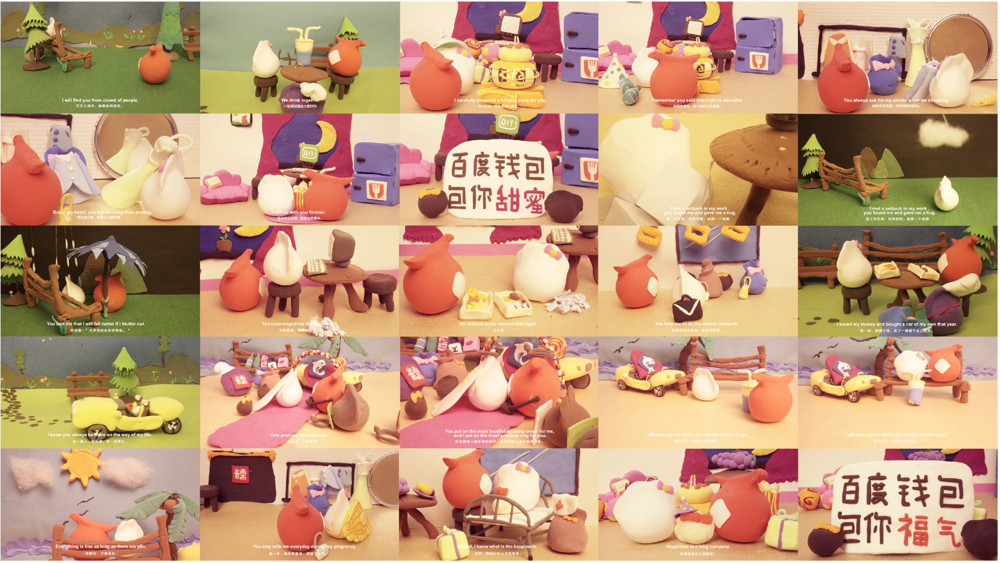
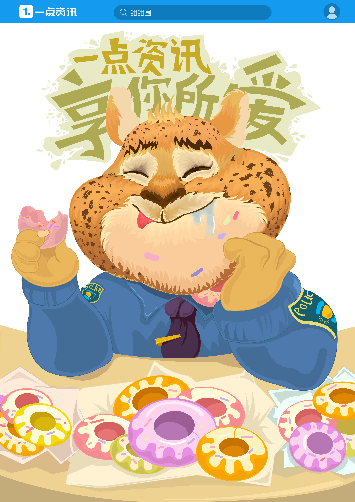
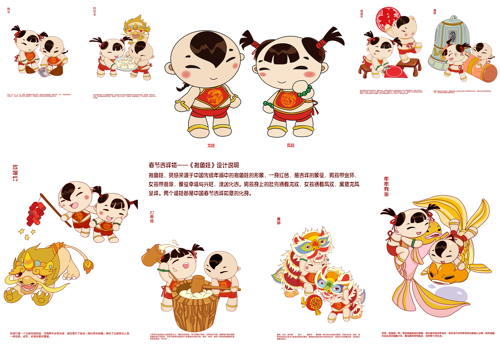

Hi! Welcome to the machine girl visual factory. Here is Yutong Liu’s visual works collaboration. Her works are based on the emotion empathy, relationship and hallucination. Works relate to the publication, installation, 2D & 3D motion graphics, video and animations. Her works are selected or awarded by AIGA, ADC, Number:Inc., and Times Young Creative awards etc.
Hi！欢迎来到机械女孩的视觉工厂。这里是刘禹桐的视觉设计作品集合地。她的作品基于情感共鸣，关系和幻想。作品相关于书籍设计，装置与展览，2D和3D动态图像设计，视频和动画。她的作品被AIGA，ADC，Number：Inc.和时报金犊奖提名，展示和获奖。
Feel free to contact Yutong Liu say “hi” or contact for any wonderful projects.❃ Project Events
- 2020 —— Machine Girl & Love Code🖥: “When you sit in front of me, you become me.”
👩🏻: “It starts from touch, It is generated by touch, It communicates through touch, It will be end with touch.”
Touch is a kind of memory. Did you touch your laptop, computer, or your telephone today? Machine girl Love Code is a publication and typography project which comes from the relationship and interaction between machine and human...（click for more) - 2019 ——
- The OrderThe order, the labor and in the end we all become to the cyborg. Living in this digital era, the way we work with machine pushes us becoming to a cyborg. The realtionship of labor between machine and yutong created and build The Order books. Who is labor? Who is machine...(click for more)
- Labor in Cyber“Imagination is more important than knowledge. Knowledge is limited. Imagination encircles the worlds”(Viereck, 1929: 117. Albert Einstein)The work we did as labor is the way it pushes us to become a cyborg. Based on the research of The Order project, here is a collabration stories in a magical cyberspace…（click for more)
- Spirit in machineSpirit in Machine is a multimedia installation project research on the simulation between the machine repetition workings and human regular gesture languages...(click for more)
- Machine Girl FactoryMachine Girl Factory is the project which pushes me into the research on the input and output of machine working...(click for more)
- 2018 ——
- Her VoiceHer Voice is a sound multimedia installation project that presents my similar gestures and movements in daily life. The book is from the visualization of the soundtrack from each movement...(click for more)
- Crazy WorldCrazy World project is an image of our future world. The background sound is from the mother of the earth, and she told about what she saw that happens on the planet...(click for more)
- Batter magazine (series zine)A series of Batter magazines are created by VCUarts MFA program 2020 group...(click for more)
- Blue and White history bookBlue and White history book is a book art piece I made it in fall 2018. Blue and White porcelain are some of the great histories in China. I believe the publication is a container. The production of these porcelains is the container of Chinese history...(click for more)
- "Our Relationship" bookOur Relationship book art piece contains and collects comments from the question online “One sentence to your ex-boyfriend.”...(click for more)
- "Why you always ask why"bookWhy you always ask “why” search bar book piece is from my search history list on Google searching engine...(click for more)
- 2017 —— 对白•书写 DialogueThe speed for us to understand this world is less than the change of itself. Life is an experimental process which can develop an unique perception of the world's form from the perspective of each person to build the relationship with the surroundings...(click for more)
❃ Award Selected Works
- 2020 Anderson Student Video Work Reel 2: Spirit in Machine
- 2019 Young Ones - Young Ones ADC Award: Blue and White history book (full book)

- 2019 World Studio, video presented: Crazy World
- 2016 时报金犊奖二等奖（Time Young Creative Awards): 感谢有你，百度钱包形象宣传设计(Thanks for you, Baidu pocket animation design)
- 2016 时报金犊奖优秀奖（Time Young Creative Awards): 享你所爱， 一点资讯广告创意 (Enjoy your love, Yidian creative poster design)
- 2015 上海国际纸上创意铜奖（ShangHai International Printing Week Creative Art Award): Transform, Butterfly Paper Light

- 2014 时报金犊奖优作奖（Time Young Creative Awards): 分享，旺仔手绘本(WangZai comic book)

- 2014 中华春节吉祥物全球征集，入围奖(Chinese Spring Festival Symbol Promotion Committee, Nominated)：抱鱼娃
❃ Selected Writing & press
- AIGA NY Fresh Grad 2020: Machine Girl & Love Code
- 2019 Number: 99 art publication:Love Poetry from Machine Boy